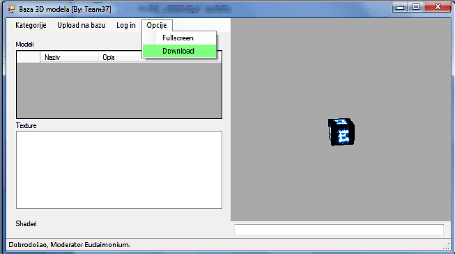
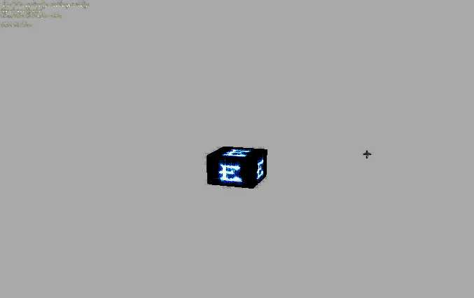
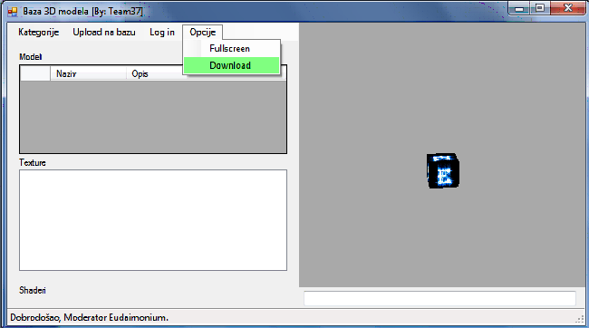
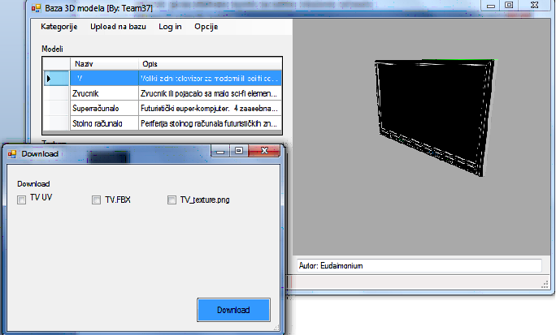

Padajuæi izbornik „Opcije“ nudi moguænosti „Fullscreen“ i “Download”
Opcija “Fullscreen” širi prikaz 3D modela na cijeli ekran umjesto samo na umanjenu u
desnom dijelu forme, kako pri pokretanju aplikacije biva postavljeno. Pri aktiviranosti
dotiène opcije imamo dodatne moguænosti kontroliranja prikaza koje su jasno naznaèene
ispisanim tekstom u gornjem ljevom kutu ekrana. Kontrole su sljedeæe:
- Desni klik miša: Rotiranje modela po želji
- Lijevi klik miša: Pomicanje modela gore-dolje
- Scroll : „zumiranje“ modela
- ESCAPE (na tipkovnici): izlaz iz “fullscreen” naèina prikaza


Odabirom opcije “Download” otvara se dijalog pomoæu možemo preuzeti trenutni model i
saèuvati ga na odabrano mjesto na našem lokalnom raèunalu.

Na sljedeæem dijalogu se otvaraju moguænosti odabira kojih toèno datoteka želimo preuzeti.
One su vezane za model koji smo odabrali, ali odabir teksture nije bitan jer su nam ponuðene
sve teksture trenutno koje imaju veze sa odabranim modelom.

Nakon što smo odabrali što želimo preuzeti od odabranih fajlova, kliknemo tipku
„Download“ nakon èega se otvara dijalog koji nas pita u koji folder želimo spremiti odabrane
datoteke.
Po odabiru „OK“ tipke na dijalogu zapoèinje preuzimanje datoteka, i nakon toga se
pojavljuje poruka „Download uspješan“ ako je sve prošlo bez problema.
Vaše datoteke koje ste odabrali se sad nalaze u direktoriju kojeg ste odabrali kao destinaciju
za download te su spremne za korište